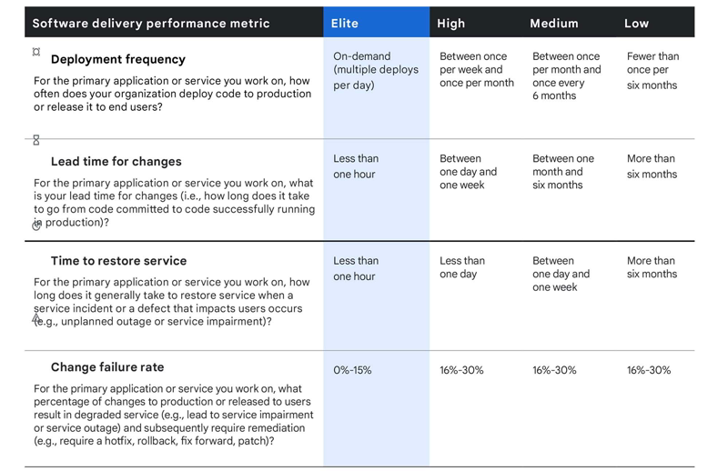

Productivity
How do you measure actual productivity? Most of the traditional developer metrics are easy to game and don't reflect the desired organization outcome.
Things that don't work
- Lines of Code
- Number of commits
- Hours worked
- Number of pull requests
- Number of emails/slack/text/LinkedIn messages sent
Things that work
Instead, you want metrics that actually demonstrate value. The DevOps Research and Assessment (DORA) metrics are a good approximation of the team delivering value within the scope that they can control.
- Deployment frequency: How often there is a production deployment
- Lead time for changes: How long it takes to get something into production
- Change failure rate: The percentage of production failures
- Time to restore service: How long it takes to recover from a production failure

- Google DevOps Blog
Additionally, it is important to track the value of deployments. This includes metrics for the deployment of product sponsored tickets, customer reported issues, and removal of technical debt.
- Deployed features/fixes/cleanup frequency: Number of improvements to the application